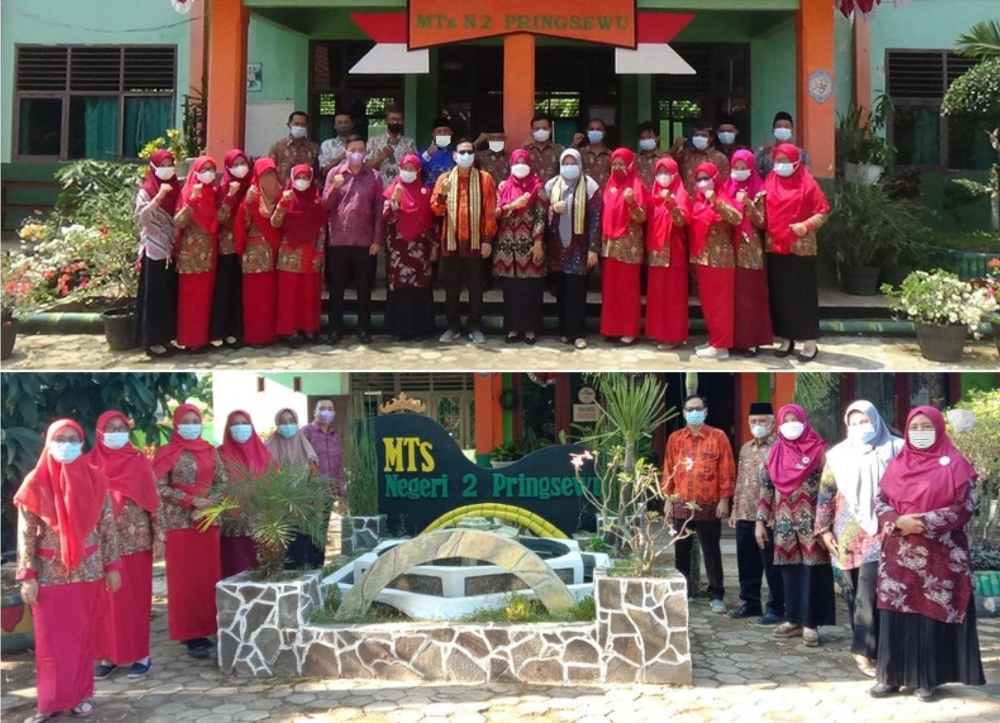

Mtsn 2 Pringsewu
Beranda
Profile
E-Learning
Data guru
Hubungi Kami
Login

Guru dan Tenaga Pendidikan
Tina Marlinda, S.Ag, M Pd. I
Kepala Madrasah
Iskandarsyah, SH
Kepala Tata Usaha
Kartini S. Ag
Bahasa Arab
Umi Harni, S. Ag
Fikih
Eis Nurjanah, S. Ag
Akidah Akhlak
Siti Fathonah, S. Pd
Matematika